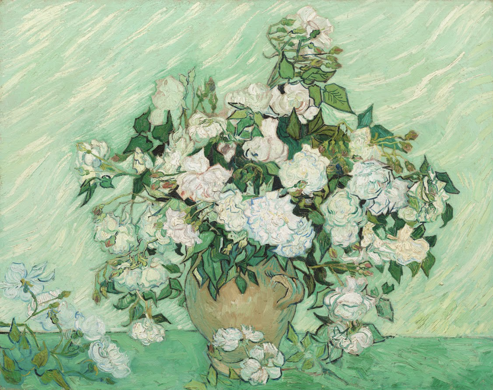

- * Mr. Vincent started painting when he was 27.
- * Besties with Paul Gauguin.
- * Before he was a painter he was a art dealer, school teacher and preacher.
- * He only sold one painting during his lifetime.
- * He cut his ear off to give to a prostitute.
- * His painting "the roses" was painted his last night in the asylum.
- * He committed suicide in 1890
True or False: Vincent Van Gogh ate yellow paint to make himself feel happier